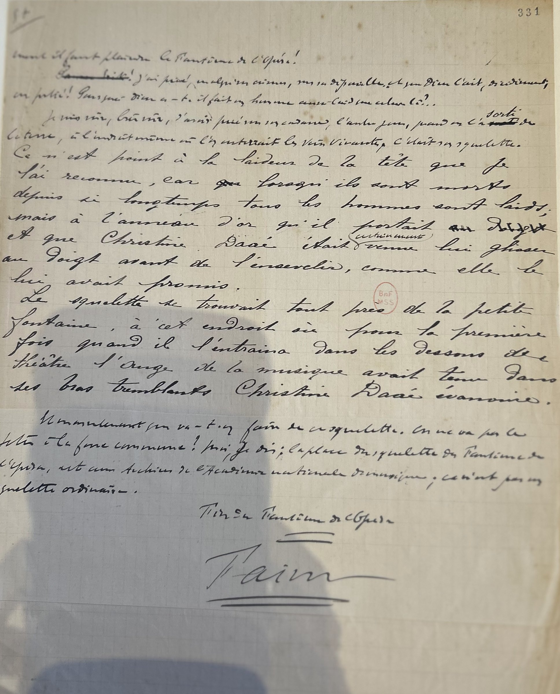
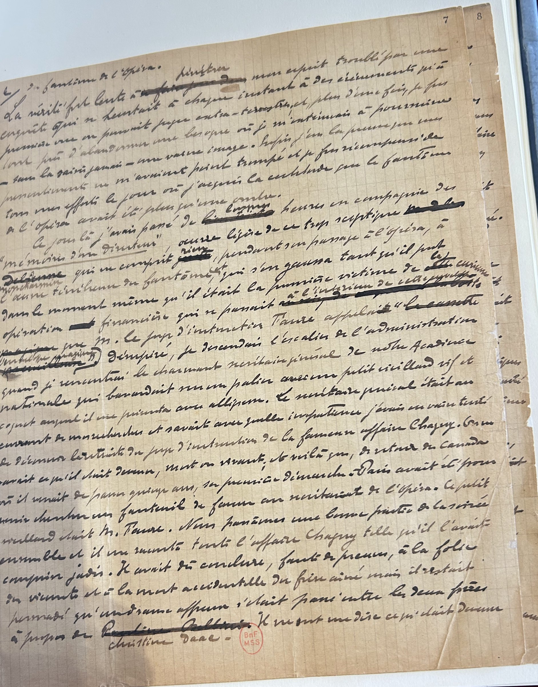
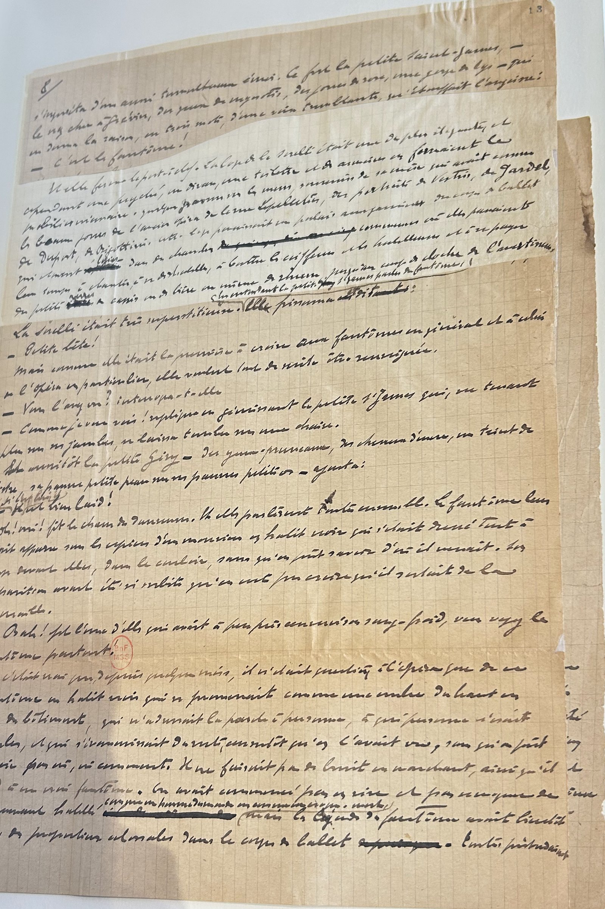
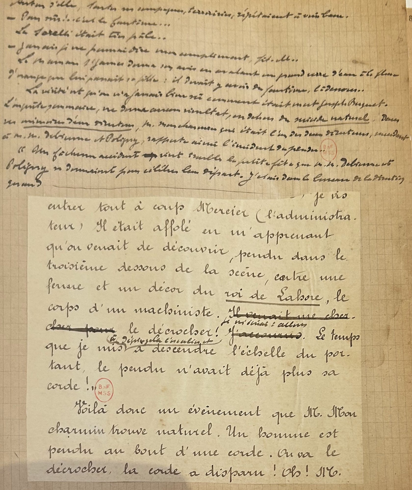
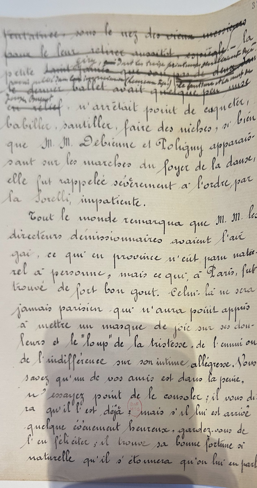
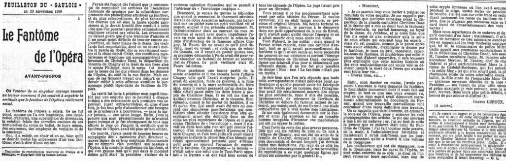

The Phantom of the Opera
Written in Nice, at the Villa Les Cascades on Mont Boron. Serialised in the daily Le Gaulois from September 1909 to January 1910, published in book form by Pierre Lafitte in 1910.
The manuscript
In the manuscript, Christine was originally called Pauline. On a working sheet the author noted: “Remplacer Pauline par Christine.” – Replace Pauline with Christine.



Where the story came from
According to the family, the story grew out of his work as a journalist and reporter, like many of his novels, and out of several real events:
- The fire at the Opéra Le Peletier on 28 October 1873. Rumour has it that the fire claimed a ballerina and that her fiancé Ernest, a pianist, was disfigured. He is said to have taken refuge by the underground lake of the Opéra Garnier.
- The fall of the chandelier at the Opéra Garnier in 1896, which killed a woman in the audience.
- 1907: workers beneath the Opéra Garnier found human remains while burying urns containing gramophone records.
At the time, Gaston Leroux was in the middle of divorcing his first wife. According to the family, the divorce dragged on for fifteen years.
More leaves from the manuscript











Le Gaulois



The 1938 edition was published by Raymond Schall in the rue Caulaincourt, at the foot of the Montmartre hill.
Adaptations
The family keeps a great many adaptations of The Phantom of the Opera: animated films (5 DVDs), comics, retellings, films and series.
Ce n’est pas un masque. C’est une voix.
- Famille Gaston Leroux: answers to the LEROUX100 questionnaire, November 2026
- BnF, Département des Manuscrits: manuscript of Le Fantôme de l’Opéra (photographs from the family’s material)